Falcon Fast
The highest recorded speed of a peregrine falcon is 242 mph, which is faster than the average speed of a car racing in the Indy 500.
The highest recorded speed of a peregrine falcon is 242 mph, which is faster than the average speed of a car racing in the Indy 500.
A nictating membrane is a translucent membrane that forms an inner eyelid in birds, reptiles, and some mammals.
Both peregrine falcons and red-tailed hawks inhabit South Bend. Here is a diagram on their differences and similarities.
 If you see an injured falcon do not attempt to help. Contact this hotline immediatly.